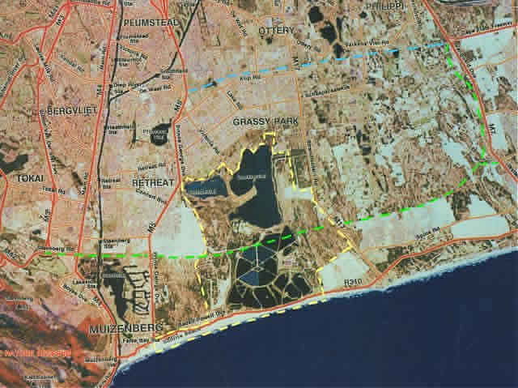
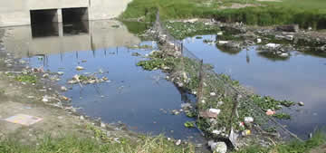
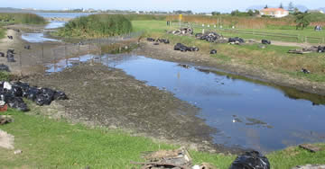
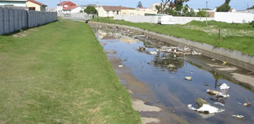
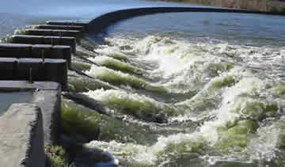
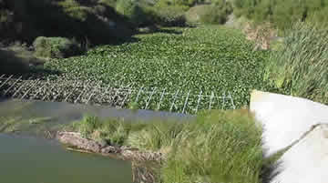
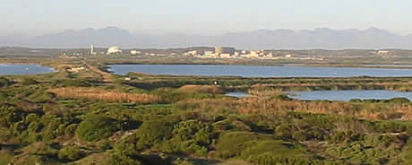
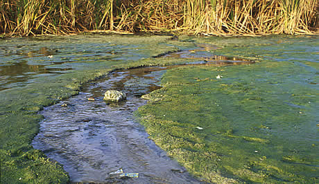
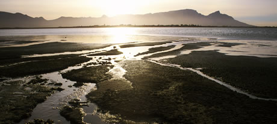

FACTS Preamble:
The
ever encroaching urbanization of the city has resulted in the False Bay
Ecology Park being 'boxed' in on the East, North and West, as may be
seen from the details below.
This has resulted in a very dense
avian population being present in the Park as the the loss of water
habitat on the Cape Flats and elsewhere forced the migration of water
birds, in particular, to this region. The resultant concentration is of significant regional, national and international importance.
In
addition, this 'cramped, impacted' avian habitat has the distinction of
containing the worlds highest concentration of threatened Red Data book
species that are on the brink of extinction. The
National Botanical Institute has identified 36 core conservation sites,
3 of which are situated in the Park, that are necessary to ensure a
continued bio-diversity level of 95%, for the Table Mountain Nature
Reserve, one of the world's 6 plant kingdoms.
Further threats are
the proposed construction of a tolled 6 lane dual highway, the R300,
along the approximate alignment in green below.
This proposed
construction will sever the FBEP into two pieces resulting in
unsustainable genetic 'islands' for all the flora and fauna and further
reduction of already scarce water bird habitat.
Associated environmental pollution in the form of light, noise, exhaust fumes and potential spillage will also impact.
Additionally,
high mortality rates are to be expected of mammals, insects and birds
that cross the roadway as these migrate between feeding and nesting
areas. Proposed R300 Toll Road. The BLUE alignment approximates the route for the North R300 link. The GREEN alignment approximates the route for the South R300 link through the FBEP. |  |
Regional Ornithological Importance:
The
park has 5 Species of water birds that exceed 30% of the total Western
Cape population, while another 5 species exceed 50% of the total Western
Cape population and 4 Species that represent 100% of the total Western
Cape population. The
waste water settling ponds are also an essential feeding area for birds
breeding at the quieter Rondevlei Nature Reserve, who then move between
the two habitats, oftern during nightfall, for their survival.
National Ornithological Importance:
Research since 1953 identifies this site as being the 5th most important wetland Bird Area - IBA in South Africa.
It
supports more birds, both in number and species, than Lake St Lucia
which is approximately 350 times the area of Strandfontein, RAMSAR sites
like De Hoop Vlei and Langebaan Lagoon. 16
Species account for 10% to 20% of the Total National Coastal Wetland
population, while 5 Species account for 30% of the Total National
Coastal Wetland population 100% of National Coastal Wetland Glossy Ibis population is reported to be present at this site. The coastal strip is also an important breeding place for the Black Oyster Catcher, which is under threat in this area.
International Ornithological Importance:
The
Strandfontein wetland system is an important migratory wader habitat,
with Five (5) bird species having more than 1% of Global population
resident. Surveys between 1980 and 1990 revealed thirteen (13) species of water birds that exceeded 1000 in number. Nine (9) Species included in South African Red Data Book have been recorded here. The
reed beds in the Waste Water Treatment Works are used for roosting by
thousands of European Swallows that migrate here during the cold
European winter months.
Rondevlei Nature Reserve:
A
Managed Nature Reserve, it was established in 1952 and has grown in
stature to the level of being a major destination for Local, National
and International bird enthusiasts and tourists. The
reserve is home to 3 endemic and 9 endangered plant species, has 228
recorded bird species, 29 reptile species and the Cape's only
hippopotamus population, currently consisting of 5 animals, which
constitutes the maximum carrying capacity of this reserve, The
reserve is enclosed by dense urbanization on three sides with an outlet
canal, some land area and the False Bay Ecology Park to the South. This
reserve's water catchment area includes water from the Cape Flats local
aquifer and polluted urban storm water runoff from Princess Vlei,
adjacent roadway hard surfaces and surrounding residential component
giving rise to high levels of nutrient and sedimentation from these
artificial inflows. It
is susceptible to additional pollution events to the storm water
runoff, one such event caused some 6 million liters of raw sewage to be
pumped into the reserve with resultant over loaded nutrient levels and
environmental damage. The
reserve's only link in terms of genetic diversity to other areas of
significance, like Wolfgat Reserve near Macassar or the Table Mountain
Nature Reserve, is via the Cape Flats Waste Water Works to the South,
and from there via a fragile Coastal Corridor of rather disturbed
Strandveld habitat. Visitors, of all ages, to the reserve make full use of its range of facilities supported by knowledgeable and helpful staff.
Zeekoeivlei Local Area Nature Reserve:
With an water area
of approximately 225ha, it is the largest continuous water body in the
FBEP and achieved Local Area Nature Reserve status in 2000.
The
vlei is regarded as the final manifestation of one of the Cape Flats
Aquifers with additional water flowing in from two man made drainage
canals known as the Big and Small Lotus Rivers which drain large
residential, horticultural and industrial areas situated to the North
and East on the Cape Flats. The
main axis of the water body lies almost due North and South with a
Peninsula jutting from the West shore in a North Easterly direction,
tending to partially split the water area. This results in two distinctly different water environments namely Home Bay and Stormy Bay where a variety of water activities are enjoyed. The
prevailing summer South Easterly winds that blow over False Bay are
responsible for most of the aeration of the vlei's water and as such
help to control some of the nutrient that arises from the Lotus Rivers
and Cape Flats Waste Water Works. The
water body contains approximately 5 million cubic meters of water with
an average depth if 1.9m, held back by a solid concrete weir that was
constructed during the mid 40's, leading to a once dynamic system being
turned into a static one.
It
is estimated, from studies conducted, that approximately 35000 cubic
meters of sediment and some 13500Kg of pure phosphate and nitrate
resulting from human and horticultural run-off, per annum enters the
vlei from the Lotus drainage rivers.  | Big Lotus River
One
of the catch fences installed, showing large amounts of trapped
plastic, tyres, bottles and debris dumped into these canals from
associated residential areas on the Cape Flats. | Little Lotus River
The
annual draw down enables solid waste, that would otherwise have ended
up in Zeekoeivlei, being cleared from the installed catch fences. |  |  | Little Lotus River
Ongoing
environmental education is necessary to teach the population that solid
waste, such as is seen here, is not disposed of into the canal system
of Cape Town. | The 7th Annual Draw Down - 2004 The previously solid weir has now
been
altered by constructing 6 openings that permit an annual draw down to
be effected by removing a series of stop blocks in these openings. This
allows the water level to drop by 1.2m and releases approximately 3
million of the estimated 5 million cubic meters in Zeekoeivlei. |  |  | Water overflowing the weir, at draw down, for the first time since the commencement of the annual draw down 6 years ago. | The released water flows down the outlet canal, here heavily infested with water Hyacinth,
to the sea in False Bay. |  |
The False Bay Coastal Park Landfill:
Situated
off Baden Powell Drive, West of the Zeekoeivlei outlet canal, it is
currently being filled with refuse collected from the entire Southern
Suburbs of Cape Town. To the North, it's buffer zone borders Rondevlei Nature Reserve, and to the West with the Capricorn Industrial Park.
The landfill
is closely monitored and audited by the Department of Water Affairs for
the disposal of toxic leachate and emission of methane gas which is
typical of a sanitary landfill facility. Recent
changes in design to the original fill heights have resulted in the
facility having an extended life and the potential for complimentary activities for the Park. Zeekoeivlei
Environmental Educational Programme (ZEEP), the largest education
program in the Western Cape, which is currently being attended by
approximately 12000 children per annum, includes the landfill site in
their environmental educational course. This
organization is planning to increase their intake to approximately
26000 children per annum to meet the demand from Cape Town schools. View
East over the FBEP, from the land fill site, with some of the old
settling ponds in the foreground and the waste water treatment plant
beyond. |  |
Cape Flats Waste Water Treatment Ponds:
The Treatment Ponds originally consisted of two natural vlei systems, which were developed into the Cape Flats Waste Water Treatment Works.
These
facilities have been upgraded significantly in recent years, making the
reticulation ponds redundant, except as an emergency facility. The
upgraded facility has the capacity to handle the volume of the Big
Lotus River but is incapable of removing the high Phosphate loading in
this river that results from residential run off, inefficient sewerage
collection from informal housing and the Philippi horticultural farming
area. This
high Phosphate loading eventually finds its way into sea in False Bay
via the outlet canal that handles overflow from the water bodies. Additional
enhancements are possible to upgrade the treatment plant that would
then enable it to rectify this situation and treat the water before it
reaches Zeekoeivlei or False Bay. The reticulation ponds are ideal for fishing and provide excellent bird watching opportunities. Blue/Green algae deposits
associated with seepage of nutrient rich water from the Waste Water Treatment Ponds that are approximately 3.5m above Zeekoeivlei. |  | The
Draw Down reveals extensive seepage of nutrient rich water from the
Waste Water Treatment Ponds into the Zeekoeivlei water body. This seepage is responsible for approximately 35% of the nutrient load in this water body. |  |
RAMSAR Facts: II - RAMSAR Site Criteria and Guidelines (Revised 1990)A wetland is identified as being of international importance if it meets at least one of the criteria set out below: 1. Criteria for representative or unique wetlands.
A wetland should be considered internationally important if:
a)
it is a particularly good representative example of a natural or
near-natural wetland, characteristic of the appropriate biogeographical
region; - or b)
it is a particularly good representative example of a natural or
near-natural wetland, common to more than one biogeographical region; -
or
c) it is a particularly good representative example of a wetland,
which plays a substantial hydrological, biological or ecological role in
the natural functioning of a major river basin or coastal system,
especially where it is located in a trans-border position; - or d) it is an example of a specific type of wetland, rare or unusual in the appropriate biogeographical region. 2. General criteria based on plants and animals.
A wetland should be considered internationally important if: a)
it supports an appreciable assemblage of rare, vulnerable or endangered
species or subspecies of plant or animal, or an appreciable number of
individuals of any one or more of these species; - or b)
it is of special value for maintaining the genetic and ecological
diversity of a region because of the quality and peculiarities of its
flora and fauna; - or c) it is of special value as the habitat of plants or animals at a critical stage of their biological cycle; - or d) it is of special value for one or more endemic plant or animal species or communities. 3. Specific criteria based on Waterfowl.
A wetland should be considered internationally important if: a) it regularly supports 20,000 waterfowl; - or b)
it regularly supports substantial numbers of individuals from
particular groups of waterfowl, indicative of wetland values,
productivity or diversity; - or c)
where data on populations are available, it regularly supports 1% of
the individuals in a population of one species or subspecies of
waterfowl. Guidelines for Application of Criteria.
(a)
A wetland could be considered of international importance under
Criterion 1 if, because of its outstanding role in natural, biological,
ecological or hydrological systems, it is of substantial value in
supporting human communities dependent on the wetland. In this context,
such support would include:
provision of food, fibre or fuel; - or maintenance of cultural values;
or support of food chains, water quality, flood control or climatic stability. The
support, in all aspects, should remain within the framework of
sustainable use and habitat conservation, and should not change the
ecological character of the wetland. - or b)
A wetland could be considered of international importance under
Criterion 1, 2 or 3 if it conforms to additional guidelines developed at
regional (e.g. Scandinavian or West African) or national level.
Elaboration of such regional or national guidelines may be especially
appropriate: where particular groups of animals (other than waterfowl) or plants are considered more suitable as a basis for evaluation;
or where waterfowl and other animals do not occur in large concentrations (particularly in northern latitudes);
or where collection of data is difficult (particularly in very large countries). - or (c)
The "particular groups of waterfowl, indicative of wetland values,
productivity or diversity" in Criterion 3(b) include any of the
following:
loons or divers: Gaviidae; - grebes: Podicipedidae;
cormorants: Phalacrocoracidae; - pelicans: Pelecanidae;
herons, bitterns, storks, ibises and spoonbills: Ciconiiformes; - cranes: Gruidae;
swans, geese and ducks (wildfowl): Anatidae; - shorebirds or waders: Charadrii; and
wetland related raptors: Accipitriformes and Falconiformes; - terns: Sternidae. - or (d)
The specific criteria based on waterfowl numbers will apply to wetlands
of varying size in different Contracting Parties. While it is
impossible to give precise guidance on the size of an area in which
these numbers may occur, wetlands identified as being of international
importance under Criterion 3 should form an ecological unit, and may
thus be made up of one big area or a group of smaller wetlands.
Consideration may also be given to turnover of waterfowl at migration
periods, so that a cumulative total is reached, if such data are
available. Classification System for "Wetland Type" Marine and Coastal Wetlands:
1.Marine waters - permanent shallow waters less than six metres deep at low tide; includes sea bays, straits.
2.Sub tidal aquatic beds; includes kelp beds, sea-grasses, tropical marine meadows.
3.Coral reefs.
4.Rocky marine shores; includes rocky offshore islands, sea cliffs.
5.Sand, shingle or pebble beaches; includes sand bars, spits, sandy islets.
6.Estuarine waters; permanent waters of estuaries and estuarine systems of deltas.
7.Intertidal mud, sand or salt flats.
8.Intertidal marshes; includes salt marshes, salt meadows, saltings, raised salt marshes, tidal brackish and freshwater marshes.
9.Intertidal forested wetlands; includes mangrove swamps, nipa swamps, tidal freshwater swamp forests.
10.Brackish to saline lagoons with one or more relatively narrow connections with the sea.
11.Freshwater lagoons and marshes in the coastal zone; includes delta lagoon and marsh systems. Inland Wetlands:
1.Permanent rivers and streams; includes waterfalls.
2.Seasonal and irregular rivers and streams.
3.Inland deltas (permanent).
4.Riverine flood plains; includes river flats, flooded river basins, seasonally flooded grassland, savannah, and palm savannah.
5.Permanent freshwater lakes (over 8 ha); includes large oxbow lakes.
6.Seasonal freshwater lakes (over 8 ha), floodplain lakes.
7.Permanent and seasonal, brackish, saline or alkaline lakes, flats and marshes.
8.Permanent
freshwater ponds (8 ha), marshes and swamps on inorganic soils; with
emergent vegetation waterlogged for at least most of the growing season.
9.Seasonal
freshwater ponds and marshes on inorganic soil; includes sloughs,
potholes, seasonally flooded meadows, sedge marshes.
10.Shrub swamps; shrub-dominated freshwater marsh, shrub carse, alder thicket; on inorganic soils.
11.Freshwater swamp forest; seasonally flooded forest, wooded swamps; on inorganic soils.
12.Peat lands; shrub or open bogs, fens.
13.Forested peat lands; peat swamp forest.
14.Alpine and tundra wetlands; includes alpine meadows, tundra pools, temporary waters from snow melt.
15.Freshwater springs, oases.
16.Geothermal wetlands. Man-made Wetlands:
1.Water storage areas; reservoirs, barrages, hydroelectric dams, impoundments (generally over 8 ha).
2.Ponds, including farm ponds, stock ponds, small tanks (generally below 8 ha).
3.Aquaculture ponds; fish ponds, shrimp ponds.
4.Salt exploitation; salt pans, salines.
5.Excavations; gravel pits, borrow pits, mining pools.
6.Waste water treatment; sewage farms, settling ponds, oxidation basins.
7.Irrigated land and irrigation channels; rice fields, canals, ditches.
8.Seasonally flooded arable land, farm land. |